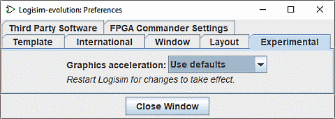

The Experimental tab

These preferences enable features that are considered experimental,
inserted to garner user feedback.
- Graphics acceleration: One Logisim user observed
that adding -Dsun.java2d.d3d=True to the command line seemed
to improve Logisim's graphics performance by telling it to use hardware graphics
acceleration. This drop-down box attempts to
configure Logisim to set this up; reports about whether this drop-down box has
any effect on performance would be welcome. It won't have
any effect until Logisim is restarted.
Next: Command line options.